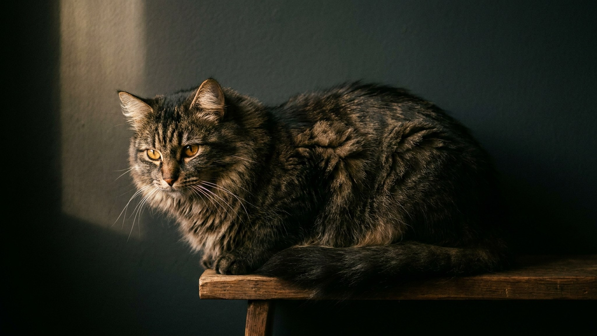

Запах из лотка чаще идёт не от кошки, а от неподходящего наполнителя. На полке зоомагазина — пять разных типов, и цена почти ничего не говорит о том, что устроит именно вашу кошку. Ниже — чем они отличаются на деле, что кошки выбирают лапами и как сменить наполнитель так, чтобы питомец не начал ходить мимо.
🐾 Заведите дневник ухода за кошкой
Вес, шерсть, обработки, прививки — всё в одном месте. А если что-то смущает, AI-ветеринар ответит круглосуточно и бесплатно.
Завести дневник → Завести в MAX →
У вас iPhone? AnimaLife есть в App Store
Кошки выбирают лоток лапами, а не носом хозяина. Большинству нравится мелкая мягкая фракция, похожая на песок, — по ней приятно копать. А вот сильные отдушки чаще отпугивают: то, что человеку кажется «свежестью», кошке — резкий чужой запах.
Резкая смена — частая причина луж мимо лотка: для кошки это внезапно «чужое» место. Меняйте постепенно — подмешивайте новый наполнитель к привычному, увеличивая его долю в течение 1–2 недель. Если кошка упорно отказывается ходить в обновлённый лоток, вернитесь к прежнему варианту и попробуйте другой тип позже. Стойкий отказ от лотка без причины — повод показать кошку ветеринару.
🐾 Чтобы уход не держать в голове
AnimaLife напомнит, когда стричь когти, вычёсывать, купать и обрабатывать от паразитов, и заведёт дневник по вашему питомцу. Бесплатно.
Настроить напоминания → Настроить в MAX →
У вас iPhone? AnimaLife есть в App Store
🐾 Понравился разбор?
Подпишитесь на канал — каждый день разбираем по одному тревожному симптому у кошек и собак: что в пределах нормы, а когда пора к врачу. Подпишитесь, чтобы не пропустить разбор, который может спасти здоровье вашего питомца.